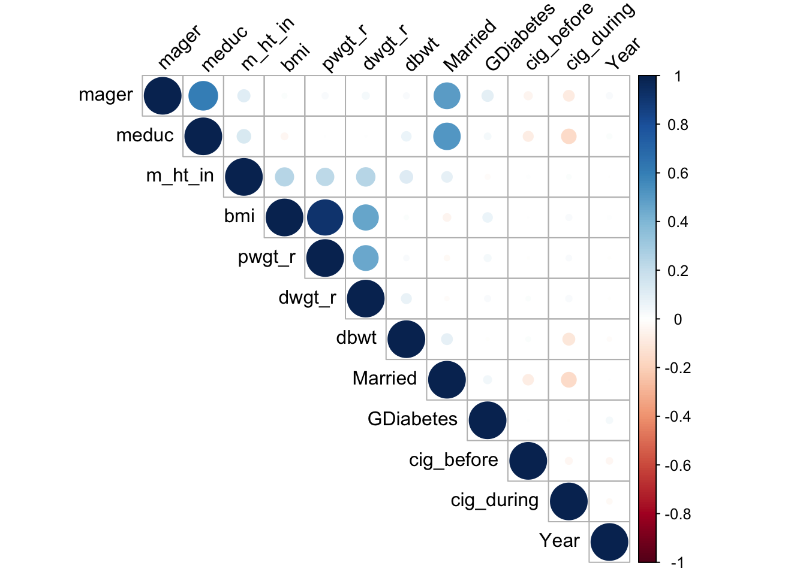

library("caret")Loading required package: ggplot2Loading required package: latticelibrary("corrplot")corrplot 0.92 loadedlibrary("tidyverse")── Attaching core tidyverse packages ──────────────────────── tidyverse 2.0.0 ──
✔ dplyr 1.1.3 ✔ readr 2.1.4
✔ forcats 1.0.0 ✔ stringr 1.5.0
✔ lubridate 1.9.3 ✔ tibble 3.2.1
✔ purrr 1.0.2 ✔ tidyr 1.3.0── Conflicts ────────────────────────────────────────── tidyverse_conflicts() ──
✖ dplyr::filter() masks stats::filter()
✖ dplyr::lag() masks stats::lag()
✖ purrr::lift() masks caret::lift()
ℹ Use the conflicted package (<http://conflicted.r-lib.org/>) to force all conflicts to become errorslibrary(dplyr)
birth_sample<-read.csv("cleanedbirth.csv")
BirthStat <- read.csv("dataset/BirthStat.csv")
YI <- read.csv("dataset/Yearly income data.csv")
birthdata <-read.csv("dataset/cleanedbirth.csv")
combirth <- birthdata |>
left_join(BirthStat, by = c("Year" = "Year"))
combirth <- combirth |>
left_join(YI, by = c("Year" = "Year"))
birthweightmodel <- lm(dbwt ~ mager+ meduc+ m_ht_in+ bmi+ pwgt_r+ dwgt_r+ Married+ GDiabetes+ cig_before+ cig_during, data=birth_sample)
summary(birthweightmodel)
Call:
lm(formula = dbwt ~ mager + meduc + m_ht_in + bmi + pwgt_r +
dwgt_r + Married + GDiabetes + cig_before + cig_during, data = birth_sample)
Residuals:
Min 1Q Median 3Q Max
-3347.0 -289.1 35.3 347.1 7253.0
Coefficients:
Estimate Std. Error t value Pr(>|t|)
(Intercept) 2130.88988 31.53166 67.579 < 2e-16 ***
mager -4.84537 0.39108 -12.390 < 2e-16 ***
meduc 8.92433 1.30215 6.854 7.24e-12 ***
m_ht_in 17.59571 0.49910 35.255 < 2e-16 ***
bmi -3.55587 0.36027 -9.870 < 2e-16 ***
pwgt_r 0.19442 0.03625 5.363 8.22e-08 ***
dwgt_r 0.39368 0.01918 20.523 < 2e-16 ***
Married 86.43417 4.22763 20.445 < 2e-16 ***
GDiabetes -5.43742 7.37829 -0.737 0.461
cig_before 67.20483 11.59933 5.794 6.90e-09 ***
cig_during -259.91138 8.08793 -32.136 < 2e-16 ***
---
Signif. codes: 0 '***' 0.001 '**' 0.01 '*' 0.05 '.' 0.1 ' ' 1
Residual standard error: 596.4 on 119989 degrees of freedom
Multiple R-squared: 0.03344, Adjusted R-squared: 0.03336
F-statistic: 415.1 on 10 and 119989 DF, p-value: < 2.2e-16correlation_matrix <-
birth_sample|>
select(-Race)|>
cor()
corrplot(correlation_matrix, method = "circle", type = "upper", tl.col = "black", tl.srt = 45)
panel.cor <- function(x, y, digits = 2, prefix = "", cex.cor, ...) {
usr <- par("usr")
on.exit(par(usr))
par(usr = c(0, 1, 0, 1))}
motheragemodel <- lm(mager ~ Year+meduc + m_ht_in + bmi + pwgt_r + dwgt_r + Married + GDiabetes + cig_before + cig_during+Year, data = birth_sample)
original_AIC <- AIC(motheragemodel)
commotheragemodel<- lm(mager ~ Year+meduc + m_ht_in + bmi + pwgt_r + dwgt_r + Married + GDiabetes + cig_before + cig_during+Year, data = combirth)
AIC(motheragemodel)[1] 696234.4motheragemodel <- lm(mager ~ Year+meduc+ m_ht_in+ bmi+ pwgt_r+ dwgt_r+ Married+ GDiabetes+ cig_before+ cig_during, data=birth_sample)
summary(motheragemodel)
Call:
lm(formula = mager ~ Year + meduc + m_ht_in + bmi + pwgt_r +
dwgt_r + Married + GDiabetes + cig_before + cig_during, data = birth_sample)
Residuals:
Min 1Q Median 3Q Max
-19.8342 -3.1093 -0.7844 2.3355 27.8346
Coefficients:
Estimate Std. Error t value Pr(>|t|)
(Intercept) -1.006e+02 1.505e+01 -6.685 2.31e-11 ***
Year 5.761e-02 7.454e-03 7.729 1.09e-14 ***
meduc 1.565e+00 8.482e-03 184.520 < 2e-16 ***
m_ht_in 1.698e-02 3.683e-03 4.611 4.02e-06 ***
bmi 2.834e-02 2.659e-03 10.660 < 2e-16 ***
pwgt_r -1.884e-03 2.676e-04 -7.039 1.95e-12 ***
dwgt_r 1.322e-03 1.415e-04 9.345 < 2e-16 ***
Married 2.844e+00 3.011e-02 94.477 < 2e-16 ***
GDiabetes 1.505e+00 5.430e-02 27.714 < 2e-16 ***
cig_before 2.830e-01 8.564e-02 3.304 0.000952 ***
cig_during 7.578e-01 5.966e-02 12.701 < 2e-16 ***
---
Signif. codes: 0 '***' 0.001 '**' 0.01 '*' 0.05 '.' 0.1 ' ' 1
Residual standard error: 4.402 on 119989 degrees of freedom
Multiple R-squared: 0.4179, Adjusted R-squared: 0.4178
F-statistic: 8614 on 10 and 119989 DF, p-value: < 2.2e-16AIC(motheragemodel)[1] 696234.4combirth$underage <- ifelse(birth_sample$mager < 18, 0, 1)
logistic_model1 <- glm(underage ~ Year+Number.of.births+Birth.rate.per.1.000.population.+Fertility.rate.births.per.1.000.women.aged.15.44. +Percent.born.low.birthweight+Percent.born.preterm+ Percent.unmarried+Mean.age.at.first.birth+PCI+meduc + m_ht_in + bmi + pwgt_r + dwgt_r + Married + GDiabetes + cig_before + cig_during, family = binomial(), data = combirth)
logistic_model2 <- glm(underage ~ Year+PCI+meduc + m_ht_in + bmi + pwgt_r + dwgt_r + Married + GDiabetes + cig_before + cig_during,
family = binomial(),
data = combirth)
logistic_model3 <- glm(underage ~ Year+meduc + m_ht_in + bmi + pwgt_r + dwgt_r + Married + GDiabetes + cig_before + cig_during,
family = binomial(),
data = combirth)
AIC(logistic_model1)[1] 18959.16AIC(logistic_model2)[1] 18953.39AIC(logistic_model3)[1] 22206.89summary(logistic_model3)
Call:
glm(formula = underage ~ Year + meduc + m_ht_in + bmi + pwgt_r +
dwgt_r + Married + GDiabetes + cig_before + cig_during, family = binomial(),
data = combirth)
Coefficients:
Estimate Std. Error z value Pr(>|z|)
(Intercept) -1.140e+02 2.104e+01 -5.417 6.06e-08 ***
Year 5.525e-02 1.042e-02 5.300 1.16e-07 ***
meduc 1.784e+00 2.549e-02 69.980 < 2e-16 ***
m_ht_in -1.644e-02 5.659e-03 -2.905 0.00367 **
bmi 4.782e-02 5.233e-03 9.137 < 2e-16 ***
pwgt_r -4.134e-03 5.000e-04 -8.269 < 2e-16 ***
dwgt_r 1.453e-03 2.560e-04 5.674 1.39e-08 ***
Married 3.336e+00 1.116e-01 29.890 < 2e-16 ***
GDiabetes 9.403e-01 1.289e-01 7.296 2.97e-13 ***
cig_before 6.958e-01 1.204e-01 5.777 7.60e-09 ***
cig_during 1.166e+00 7.998e-02 14.581 < 2e-16 ***
---
Signif. codes: 0 '***' 0.001 '**' 0.01 '*' 0.05 '.' 0.1 ' ' 1
(Dispersion parameter for binomial family taken to be 1)
Null deviance: 37715 on 119999 degrees of freedom
Residual deviance: 22185 on 119989 degrees of freedom
AIC: 22207
Number of Fisher Scoring iterations: 10set.seed(821)
train_indices <- sample(1:nrow(combirth), 0.7 * nrow(combirth))
train_data <- combirth[train_indices, ]
test_data <- combirth[-train_indices, ]
glmlogistic_model_train <- glm(underage ~ Year + meduc + m_ht_in + bmi + pwgt_r + dwgt_r + Married + GDiabetes + cig_before + cig_during,
family = binomial(),
data = train_data)
predictions <- predict(glmlogistic_model_train, newdata = test_data, type = "response")
mse <- mean((test_data$underage - predictions)^2)
print(mse)[1] 0.02787073predicted_class <- ifelse(predictions > 0.5, 1, 0)
accuracy <- mean(predicted_class == test_data$underage)
print(accuracy)[1] 0.9590556